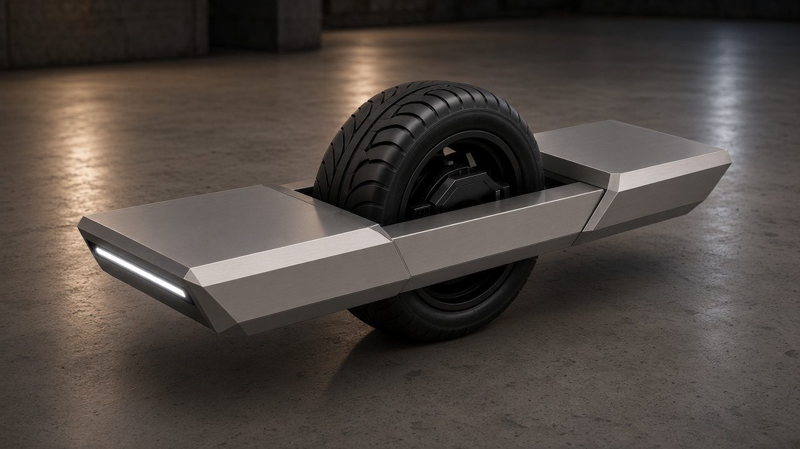
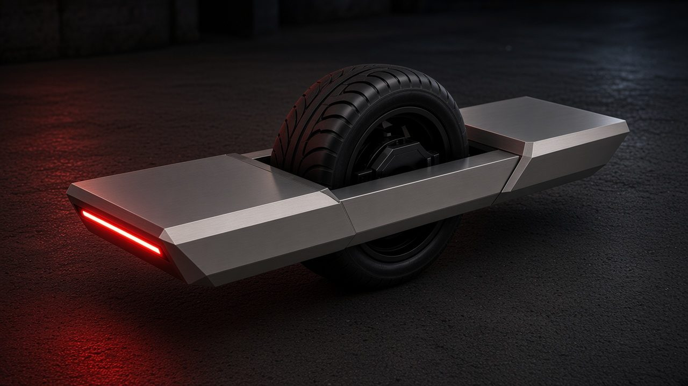
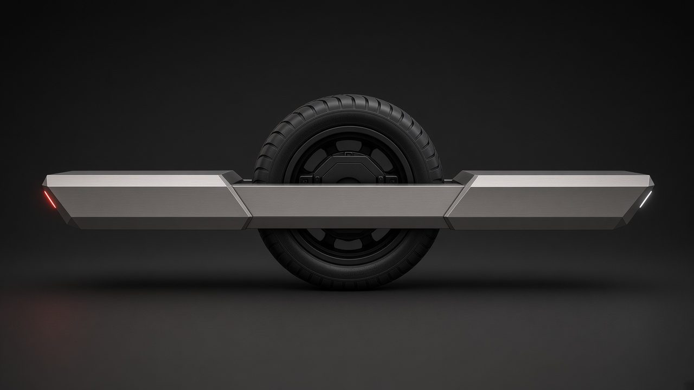
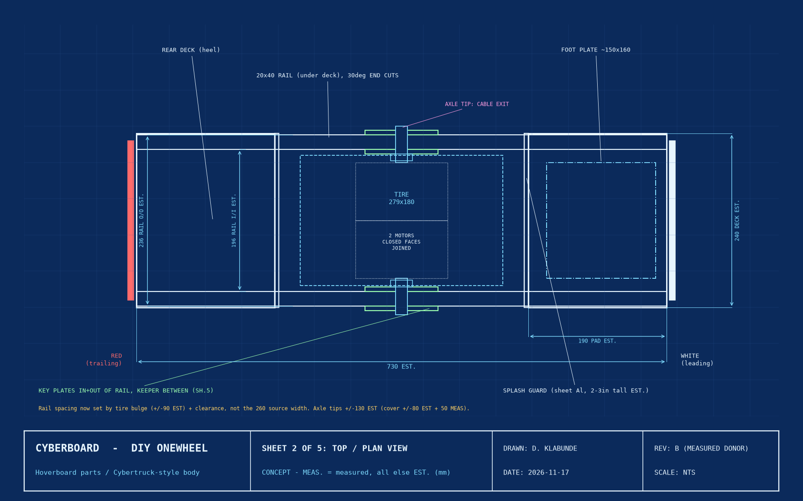
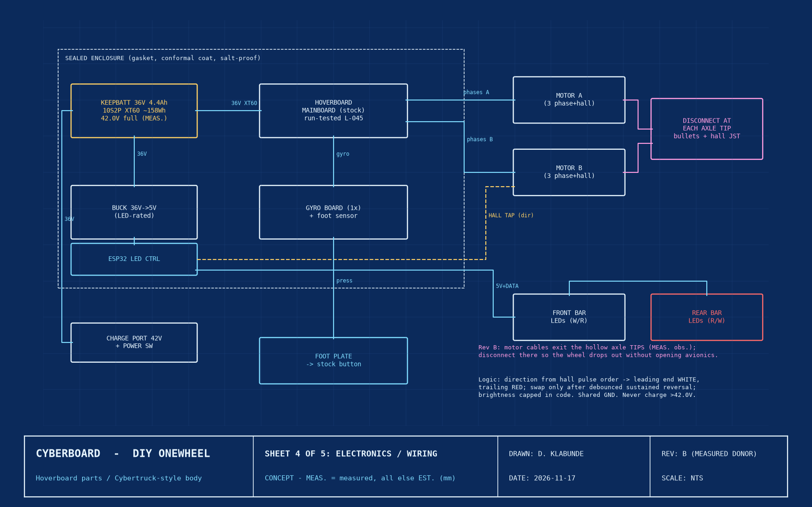
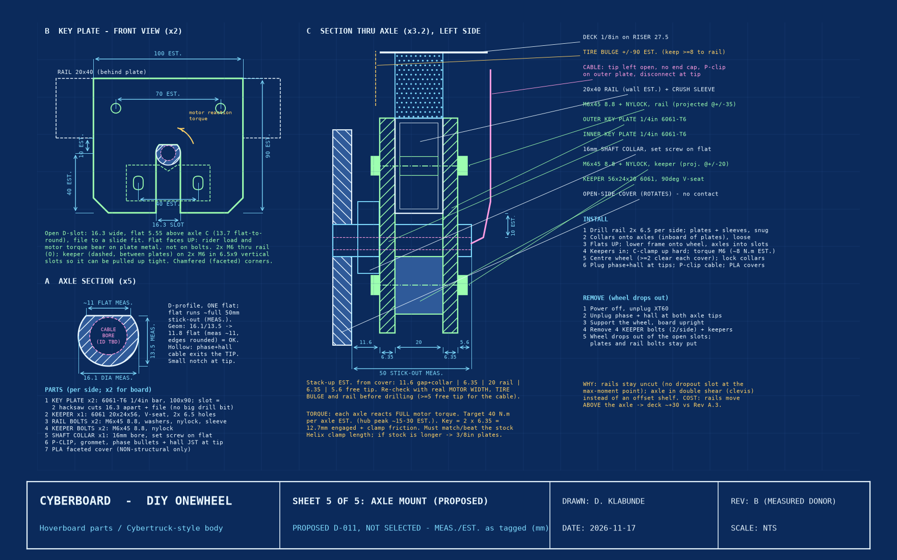
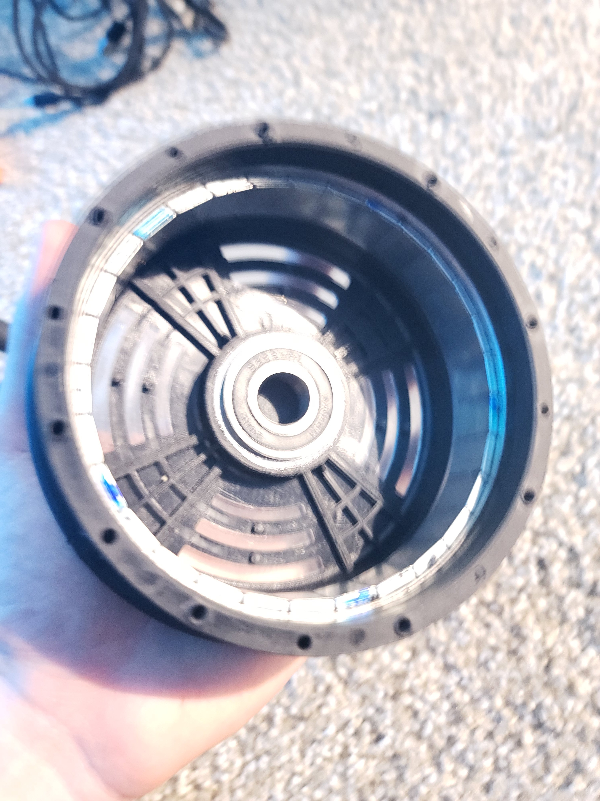
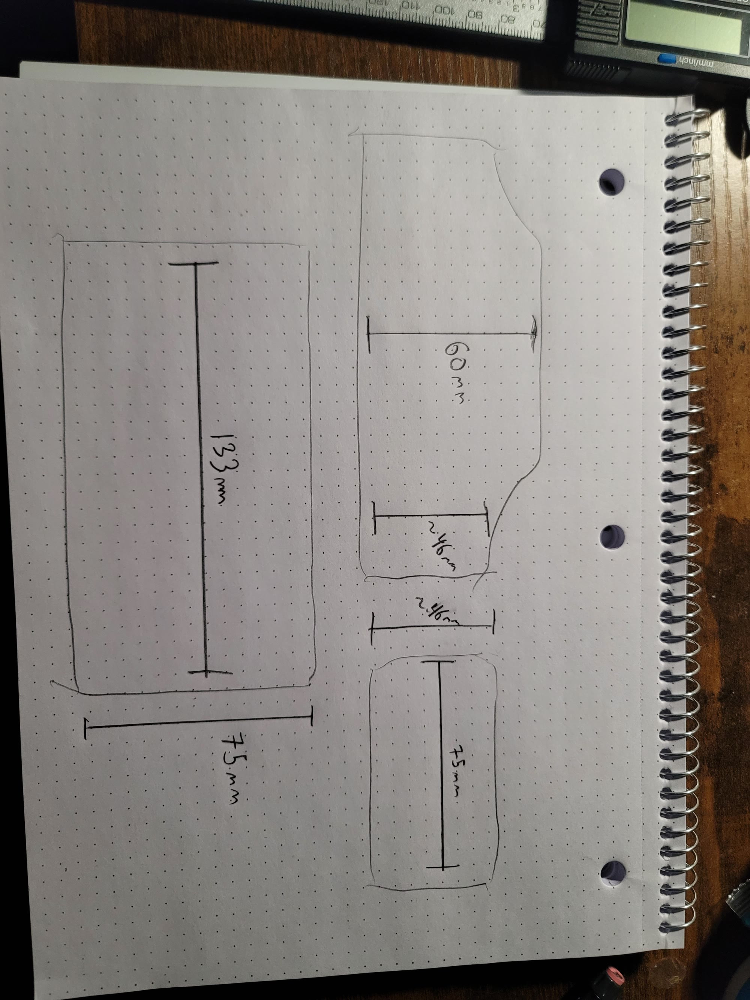
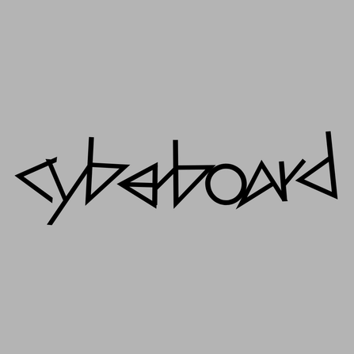
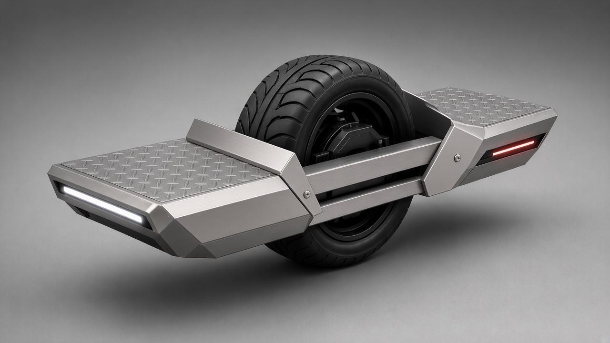

CyberBoard: engineering deep dive
A DIY ultra-minimal one-wheel electric board built from a used hoverboard.
Lead designer & builder · Oct 2026 – present
Status
In progress. Teardown started 16 Nov 2026: the tire was cut off, the boards are separated, and the first stator came out of the rotor after about an hour. The axle is measured. Rev B (17 Nov) uses that axle and the measured pack. Axle mount D-011 is drawn and proposed, not chosen. A treaded go-kart tire, 260 mm OD × 170 mm wide, is picked and not here yet. The air valve is planned through the printed spacer band. The donor still runs on the new 36V 4.4Ah pack ($48.99): both motors drove and it self-balanced on 15 Nov. The old pack was dead (~0.7 V). Spent so far: $88.99 of $150–200. Motor width, spacer thickness, and the tire on the motors are still estimates (EST.).
Problem & goal
Build a rideable single-wheel (Onewheel-style) board from a used hoverboard, with an ultra-minimal, sharp-edged smooth-aluminum look and direction-aware LED lighting, for $150–200 total using basic tools.
Requirements
| ID | Requirement | Source / reason |
|---|---|---|
| R1 | Total build cost ≤ $150–200 | Budget set by me |
| R2 | Reuse a 6.5" 36V (10S) hoverboard: motors, charger, mainboard, gyro board (battery replaced) | Cost; reference build uses stock electronics |
| R3 | Treaded tubeless go-kart tire, tire only (the motors act as the rim), listing size 260 mm OD × 170 mm wide. Air valve through the printed spacer band | Grip on wet roads and snow |
| R4 | Sealed, salt-proof electronics: gasketed lid, cable glands, conformal coating | Follows from riding in wet/snow |
| R5 | Leading-end light white, trailing-end red; swap only after a sustained reversal | Visibility; no flicker near standstill |
| R6 | Fast access to the avionics: top deck plates come off with a few screws into rivet nuts/threaded inserts | Serviceability (top priority) |
| R7 | Quick-disconnect wiring (e.g. XT60 battery, JST/Dupont signals); no permanent adhesive on serviced parts; wheel drops out via axle clamp bolts | Serviceability |
| R8 | Printed parts fit ~220×220 mm bed, PLA; CAD in FreeCAD, deliver STEP + STL | Available tools |
| R9 | Rider-detect stays on the stock, proven circuit | Safety-critical |
Parameters & constraints (Rev B)
Rev B (17 Nov 2026). The pack and the axle are measured. The tire size is from the listing and is not in hand. Axle mount D-011 is proposed, not chosen. Everything else is still EST.
| Parameter | Value | Status |
|---|---|---|
| Overall length | 730 mm (2× 20×40 mm aluminum rails, 30° cuts) | EST. |
| Width | Deck drawn 240 mm. Rail spacing follows tire bulge: 196 mm inner / 236 mm outer. At the 170 mm tire, clearance to each rail goes from ~8 mm to ~13 mm, so the rails could move in up to 5 mm per side | EST. |
| Tire | Treaded tubeless go-kart tire, 260 mm OD × 170 mm wide. Rev B had assumed 279 × 180, so the axle and deck sit ~9.5 mm lower once this is checked on arrival | Listing. Picked, not bought |
| Air valve | Through the printed spacer's outer band. Short metal tubeless stem. The printed band is porous, so it and both motor-to-spacer seams have to be sealed | Planned. Stem to buy |
| Rim | Two hub motors joined closed face to closed face (plastic faces, observed), printed spacer, M6 rods through the spoke pads, backing rings inside each face. ~127 mm dia and ~70 mm width are still the old estimates | Join observed. Widths EST. |
| Axle | D-profile, one flat: ~16 mm round, 13.5 mm to the flat, flat ~10.7 mm wide, ~50 mm stick-out. The flat runs nearly the full stick-out. A small lip at the tip could hold a clip | Measured |
| Axle mount D-011 | Per side: two 1/4 in aluminum key plates (100 × 90 mm) on the 20×40 rail, open-bottom D-slot drawn 16.3 mm wide and 13.7 mm to the flat, keeper block under the axle, 16 mm shaft collar inboard. Axle center 10 mm below the rail bottom. Cable disconnects at the open tip. Wheel drops after the keeper bolts come out | Proposed, not chosen |
| Axle height | ~140 mm on the old estimate, then ~9.5 mm lower with the listed tire | EST. Verify on arrival |
| Battery riser | ~27.5 mm (25–30) on top of the rails; material TBD | Kept on Rev B |
| Deck top height | ~217 mm from the ground with the rails above the axle (was ~187). The listed tire would lower this ~9.5 mm | EST. |
| Foot pads | ~190 × 220 mm each | EST. |
| Foot trigger plate | ~150 × 160 mm | EST. |
| Deck material | 1/8" (3.2 mm) aluminum; diamond plate vs smooth top under review (concept v5 is all-smooth) | Open |
| Donor | Used 6.5" 36V hoverboard: 42V 0.4A charger, 160 lb max load, 7 mph max (label) | Confirmed |
| Battery | 36V 4.4Ah 10S2P Li-ion, XT60, 20A BMS; measured ~133 × 75 × 60 mm, one end stepped to ~46 mm (the listed 42 mm height was wrong). Arrived just under 42 V. About 7.5 mm left under the deck (67.5 mm clearance) for padding and wiring. Replaces the dead ~0.7 V donor pack | Received, measured |
| Motors | 2× hub motors. Motor 1 stator is out. Motor 2 is not. Wattage not measured | Teardown started |
| Logic power | 36V → 5V buck converter sized to LED current; brightness capped in code | Part TBD |
| LEDs | 144/m addressable strips | Chosen |
| Lighting MCU | ESP32 (or Arduino Nano) | Chosen |
| Weight, top speed, range | TBD | Not yet tested |
System architecture
Mechanical
- Two aluminum 20×40 mm rails form the frame. On Rev B they sit above the axle. The mount that puts them there is D-011 (key plates, a keeper, and a shaft collar), and it is proposed, not chosen
- Wheel: two hub motors joined closed face to closed face with a printed spacer and M6 rods through the spoke pads. The air valve runs through the printed spacer band on a short metal tubeless stem that is still to buy. The spacer is porous, so the band and both motor seams have to be sealed
- Decks: 1/8" aluminum diamond plate, screwed into rivet nuts so they lift off for service
- Splash guards: thin (~1/16") bent sheet-aluminum guards, 2–3" tall, at each wheel cutout edge (full fender dropped)
- Riser: 25–30 mm spacer on top of the rails only, kept on Rev B, to clear the larger battery
- Printed parts split to fit the printer bed; split parts bonded with two-part plastic epoxy, no CA glue on load-bearing joints
- Printed parts: spacers, bumpers, gyro activator cap, gyro mounting template; PLA ~549 g, ~16 h
Electrical & power
- Stock mainboard and one gyro board; the gyro input is rewired so a single gyro drives both motors (no custom firmware)
- 36V → 5V buck converter feeds the ESP32 and LED strips
- New 36V 4.4Ah pack between the rails under the deck, made to fit by the ~27.5 mm riser; mainboard, gyro and ESP32 under the front deck, in sealed enclosures
- Cold weather: expect reduced output and range; do not charge below 0 °C
Control & sensors
- Primary direction sensing: tap one hub motor's hall sensor lines; pulse order gives forward vs reverse
- Backup: MPU6050 IMU (noisier, because the board is always tilting)
- Hysteresis/debounce so colors swap only after a sustained reversal
- Rider detect: floating foot plate on 3–4 springs or rubber bumpers presses the stock foot button; stock wiring and logic kept
Bill of materials
Spent so far: $88.99 (donor + battery). Other prices are listing prices, not final costs.
| Item | Choice | Est. cost | Status |
|---|---|---|---|
| Donor hoverboard | Used 6.5" 36V board, local pickup | $40 | Bought |
| Battery | 36V 4.4Ah 10S2P pack, XT60 | $48.99 | Received |
| Tire | Treaded tubeless go-kart tire, 260 mm OD × 170 mm wide (listing) | TBD | Picked, not bought |
| Air valve | Short metal tubeless stem through the printed spacer band | TBD | To buy |
| Lighting | ESP32/Nano, hall tap, buck converter, LED strips | ~$10–15 | Planned |
| Frame rails | 2× 20×40 mm aluminum, 730 mm | TBD | Planned |
| Decks | 1/8" aluminum diamond plate, 24×24 in sheet | TBD | Planned |
| Guards | ~1/16" aluminum sheet | TBD | Planned |
| Fasteners | Rivet nuts/inserts, M5/M6 hex, M8 bolts, M6 rod | TBD | Planned |
| Printed parts | PLA, ~549 g | TBD | Planned |
| Total | $88.99 spent so far (target $150–200) |
Design decisions
| Decision | Alternatives considered | Choice & rationale |
|---|---|---|
| Donor drivetrain | Buy motor/controller/battery separately | Reuse a used hoverboard: far cheaper; tied to stock electronics |
| Battery | Keep the 2.0Ah donor pack; ≤$25 used pack | New 36V 4.4Ah 10S2P pack ($48.99), received: the donor pack was dead (~0.7 V) and too small for range |
| Battery fit | Enclosure hanging below the rails | Rev A.3 riser (~27.5 mm on 40 mm rails): the measured pack fits under the deck with ~7.5 mm for padding and wiring |
| Look | Angular faceted body with rails and visible fasteners (earlier concepts looked like a hovercraft) | Concept v5/v6: all-smooth aluminum, sharp edges, lights only on the end faces, no visible screws |
| Donor source | New 6.5" boards $99–130; eBay used (mostly parts) | Used local board $15–45: keeps budget; must be tested |
| Wheel | Tire + rim kit | Tire only; the two motors are the rim, so a rim is wasted money |
| Tread | Slick ($29.79–39.99) | Treaded: wet and snow grip; costs more; ice still needs studs |
| Firmware | hoverboard-firmware-hack-FOC | Stock electronics, one gyro rewired: proven in the reference build, less risk |
| Foot trigger | FSR / force sensor | Spring-mounted plate pressing the stock button: no new electronics in the safety-critical circuit |
| Direction sensing | MPU6050 IMU | Hall sensor tap primary (cleaner signal); IMU kept as backup |
| Deck material | 9 mm plywood (needs sealing), PVC (brittle in cold), HDPE/polycarbonate (flexy), G10 (expensive) | 1/8" aluminum diamond plate: stiff, weatherproof, available locally |
| Avionics access | Dedicated hatch with captive/quarter-turn fasteners | Removable top plates with screws into rivet nuts: simpler, threads survive repeated removal |
| Fender | Full fender; short 1–2" wedge guards | Thin 2–3" bent sheet-aluminum guards: keep the look, still catch debris |
| Adhesive for split PLA parts | CA glue; flexible plastic bonder | Rigid two-part plastic epoxy: fills seams, longer working time |
| Cosmetic marble slab | Slab | Scrapped: heavy, brittle, cosmetic only |
| Axle mount | Cut the donor axle adapter in half, or an earlier external bracket | Rev B draws D-011: aluminum key plates, a D-slot, a keeper, and a collar. Proposed only. Not chosen |
Timeline
| Date | Work |
|---|---|
| Oct 29 | Kickoff and research; specs, budget, treaded tire, foot-trigger plate, direction-aware lighting; Rev A blueprints approved; rail sticker; serviceable top plates; aluminum deck and sheet guards chosen |
| Oct 30 | Adhesive plan for split printed parts (two-part plastic epoxy) |
| Oct 31 | Donor hoverboard bought ($40); label specs added; Rev A.2 (splash guards); concept v5 all-smooth look; bigger battery decided; Rev A.3 riser; concept v6 renders; bench reading ~0.7 V on the donor pack |
| Nov 1 | Ordered the 36V 4.4Ah replacement pack ($48.99) |
| Nov 13 | Pack received. Terminals just under 42 V (near full for 10S). Measured ~133 × 75 × 60 mm, stepped end ~46 mm; the listed 42 mm height was wrong. Under-deck clearance ~67.5 mm, so ~7.5 mm margin |
| Nov 15 | First power-on on the new pack: beeps, green status light, hub LEDs, both motors drive, self-balances (~3 min, cover off). Mainboard, motors and gyro boards work. A dragging wheel was a caught wire; route wires clear on reassembly. A flashing blue light was the footpad sensor, not a battery fault |
| Nov 16 | Tire cut off and the boards separated. The stator stayed stuck in the rotor; the first one came out by hand after about an hour. The motors join closed face to closed face |
| Nov 17 | Axle measured: D-profile, ~16 mm round, 13.5 mm to the flat, flat ~10.7 mm wide, ~50 mm stick-out. Rev B drawn from the measured pack and axle. Axle mount D-011 added as a proposal, not a choice. Deck height goes from ~187 mm to ~217 mm (EST.) |
| Nov 18 | Go-kart tire picked at 260 mm OD × 170 mm wide (listing). The air valve will run through the printed spacer band. A short metal stem is still to buy |
Testing plan
The donor pack, the first power-on, and the first stator are done. Motor 2, LED switching, and ride tests on the finished board are still planned. D-011 is not a test result. It is only proposed.
| Test | Pass criteria | Result |
|---|---|---|
| Donor pack voltage at terminals | Above BMS cutoff so it can charge | Fail: ~0.7 V. Treated as dead |
| Verify donor is 36V | Matches spec | Pass (spec label: 36V, 42V charger) |
| Donor bench test with new pack: motors and gyro boards | Both motors drive; gyro boards respond; board self-balances | Pass: powers up, both motors drive, self-balances ~3 min with the cover off. A dragging wheel was a wire in the way. Charger not rechecked |
| Pull motor 1 stator | Stator out, so the closed face can be drilled and bolted | Fail, then fixed. The magnets held it for about an hour, then it came out by hand. Motor 2 has not been started |
| Measure the axle | Enough to draw a D-slot | Pass. ~16 mm round, 13.5 mm to the flat, flat ~10.7 mm wide, ~50 mm stick-out |
| Single-gyro rewire | Both motors respond to one gyro | Not yet tested |
| Wheel seal | Holds pressure (leak rate TBD) | Not yet tested |
| Hall tap bench test | Direction detected without disturbing the mainboard | Not yet tested |
| LED direction switching | Correct colors; no flicker near standstill | Not yet tested |
| Foot plate | Reliably presses the stock button under rider weight | Not yet tested |
| Service access | Top plates off and electronics unplugged without touching wheel or frame | Not yet tested |
| Ride tests | Low speed first, then full speed; stable | Not yet tested on the finished board (donor only: ~3 min self-balance, cover off) |
Risks & open issues
| Risk / issue | Mitigation |
|---|---|
| Donor mainboard, motors and gyro boards (the old pack was fully drained) | Verified on the new pack: powers up, both motors drive, self-balances. Charger and the single-gyro rewire are still untested |
| Battery fit is tight (~7.5 mm). Measured 60 mm tall; the listing said 42 mm. Clearance under the deck is ~67.5 mm | It fits. Keep padding and wiring inside that margin and confirm at assembly |
| Wires can catch a wheel while the board is apart | One wheel dragged on a wire; both spin freely with power off. Route wires clear of the wheels on reassembly |
| Tapping hall lines could disturb the motor controller | Splice carefully, share ground, bench-test before assembly; IMU backup |
| Water and road salt reaching electronics | Gasketed enclosure, cable glands, conformal coating |
| Cold-weather battery loss | Plan reduced range; no charging below 0 °C |
| Ice traction | Treaded tire is not enough on ice; studs would be needed |
| Tire and valve still to buy, with $61–111 of budget left | The tire is picked (260 × 170 mm listing). The stem is not bought. Confirm both on arrival |
| Many wheel and frame sizes are still estimates | The axle and the pack are measured. Motor width, spacer, tire size on the motors, rail wall, and closed-face thickness are still EST. D-011 is proposed, not chosen |
| Exact printer model TBD | Design for ~220×220 mm bed |
Images























Next steps
- Pull the second stator. Keep metal chips off the magnets, and check the hall wires
- Choose or reject axle mount D-011. It is only proposed
- Buy the tire and the short metal valve stem. Run the valve through the printed spacer band
- When the tire arrives, check 260 mm OD × 170 mm wide. Rev B assumed 279 mm OD, which would put the axle and deck about 9.5 mm lower
- Pick riser material and deck finish (smooth vs diamond plate)
- Model the foot-trigger plate and bracket in FreeCAD (STEP + STL)
- Fabricate frame, decks and guards; route wires clear of the wheels and seal the electronics
- Run the remaining tests, low speed first